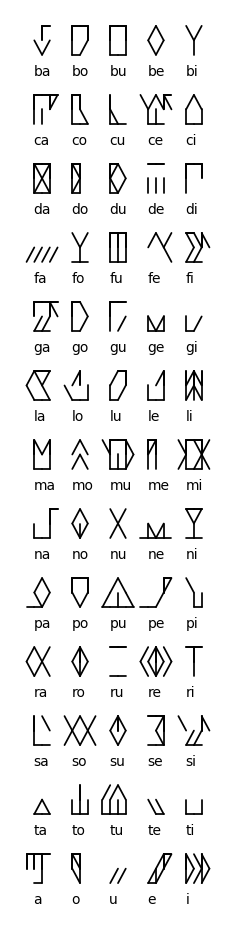

What is Hibernoglyphics?
Hibernoglyphics is a syllabic writing system for Irish.
But isn't Irish full of really complex syllable onsets and codas like "ml", "dhb" and "str"?
Yes, but there are a few tricks to working around this. Here they are:
- Firstly, all dialects of Irish break up some syllable codas with a so-called "epenthetic vowel" (guta cúnta). Thus, gorm "blue" is really said as if it was spelt goram.
- Secondly, in Munster Irish this is taken a step further and consonant clusters like -thr- are broken up too: athrú becomes atharú.
- Thirdly, historically a lot of vowels were lost in the middle and end of Irish words: thus inghean "daughter" comes from Primitive Irish INIGENĀS. The final vowel was lost in a process called apocope, but it left its mark in the broad/slender quality of the final consonant. We can use this to our advantage: damh "ox" (nominative singular) can be written in our system as "daṁo" and daimh "ox" (genitive singular) can be written as "daṁi". Note that the lenition dot is used instead of a "h", this will be used in our system too (one of the minor exceptions to my decision to not use Latin script shapes for my writing system).
- Finally, the most complex syllable onsets are scl, scr, str, spl, spr. By making special characters for sc, sp, st (which are internally transcribed as x, q, z), we can make sure that no syllable will need more than two characters to transcribe its onset.
We can apply these principles liberally to ensure that all words are writeable using a reasonable inventory of characters, and have a reasonable length in our system. Sometimes the resulting spellings will resemble Primitive Irish, such as inghean being spelt iniġeno, and as such this system has features of a highly etymological spelling, however that is not its aim.
Introduction
Now time to display the actual symbols that will be used to write this system.

The basic syllable characters in Hibernoglyphics.